Fall 2026
Taxation and tradeoffs
From topic to research question
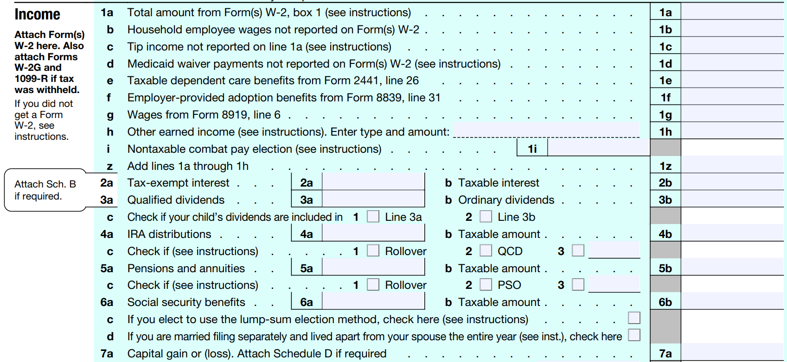
https://www.irs.gov/pub/irs-pdf/f1040.pdf
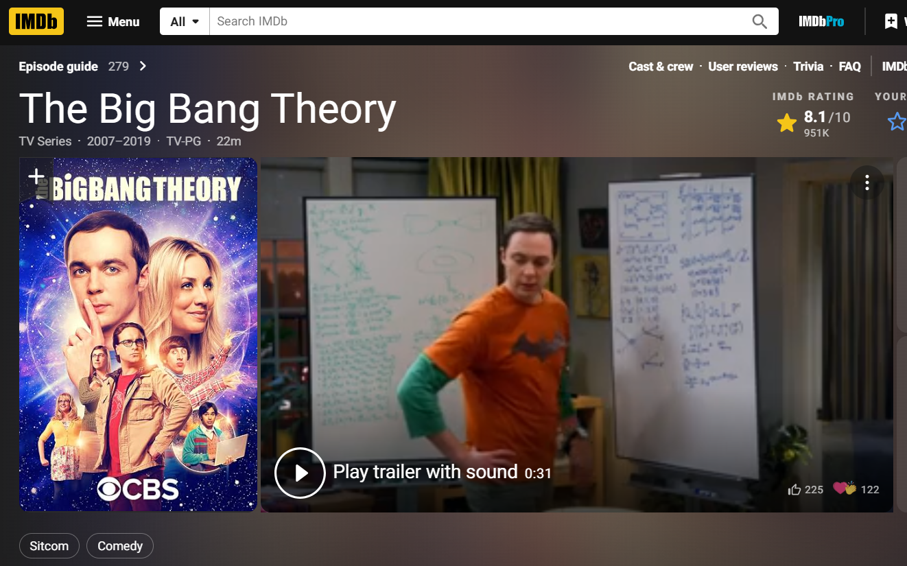
https://apps.irs.gov/app/understandingTaxes/teacher/hows.jsp
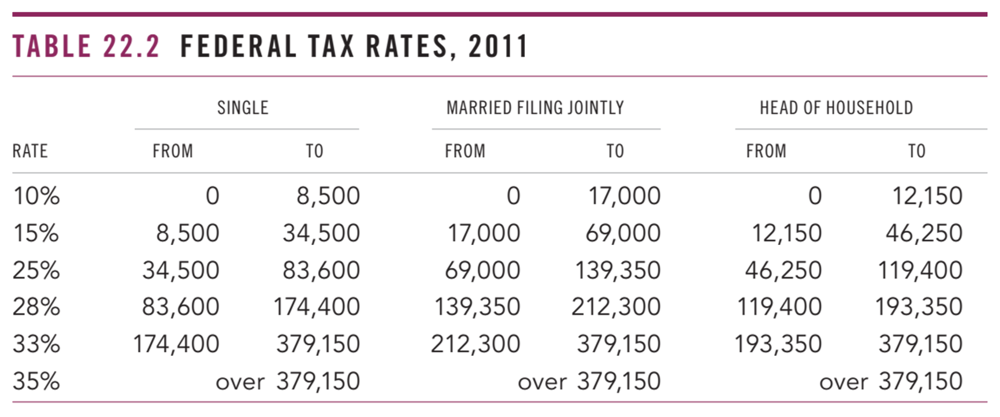
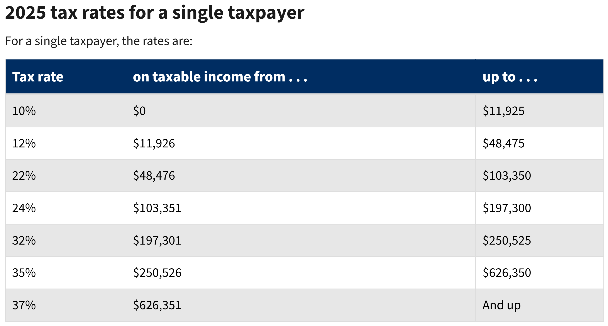
Individual incomes are not taxed below a certain level, say \(y_0\), but taxed at rate \(t_0\) above that level and below a higher income bracket \(y_1\), and then taxed at rate \(t_1 > t_0\) for \(y > y_1\).
Individual incomes are not taxed below a certain level, say \(y_0\), but taxed at rate \(t_0\) above that level and below a higher income bracket \(y_1\), and then taxed at rate \(t_1 > t_0\) for \(y > y_1\). \[C = \begin{cases} w \times h, & h \leq h_0 \\ w \times h_0 + \left( 1 - t_0 \right) w \times \left( h - h_0 \right), & h_0 < h \leq h_1 \\ w \times h_1 + \left( 1 - t_0 \right) w \times \left( h_1 - h_0 \right) + \left( 1 - t_1 \right) w \times \left( h - h_1 \right), & h_1 < h \\ \end{cases}\]
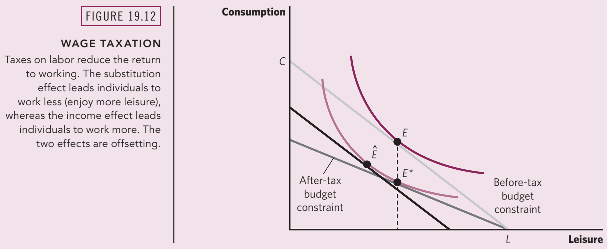
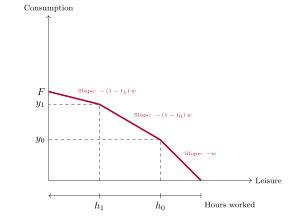
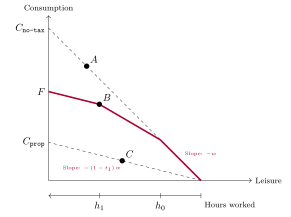
In this example, the individual would have chosen
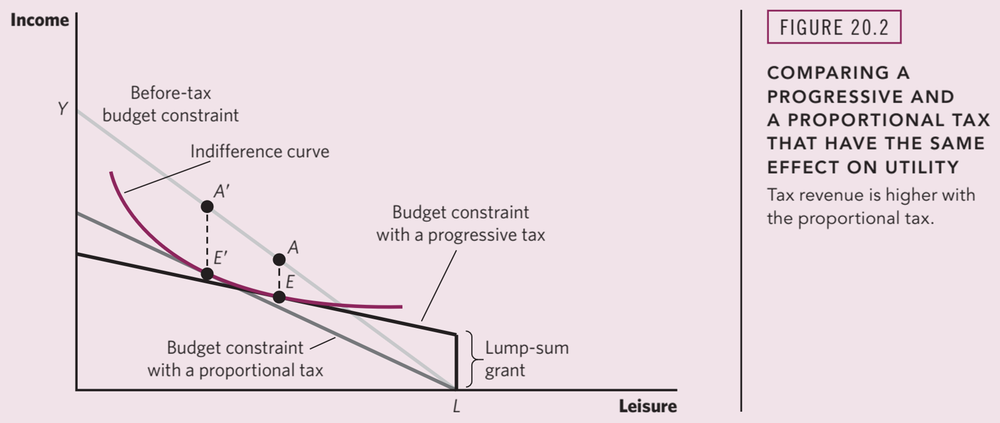
The answer is no.
The commodity taxes that minimize the deadweight loss:
\[\frac{t}{p} = k \left( \frac{1}{\eta^d} + \frac{1}{\eta^s} \right)\]
Ramsey taxes are proportional to the sum of the reciprocals of the elasticities of demand and supply.
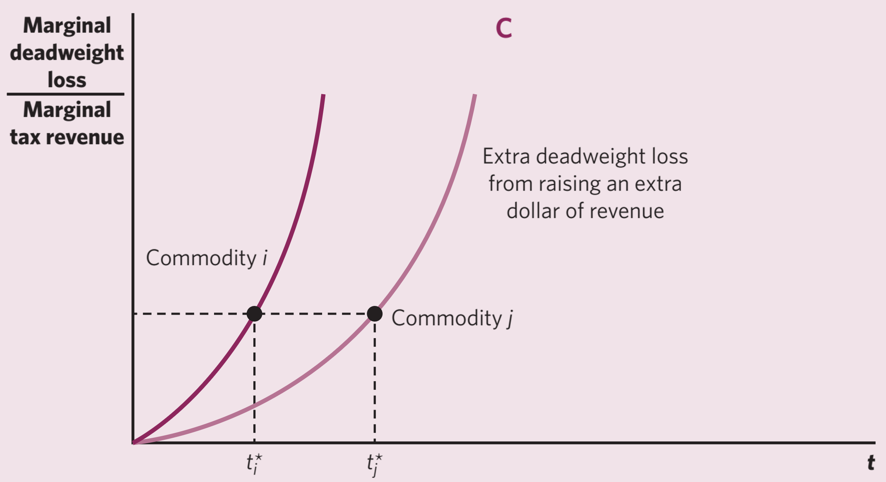
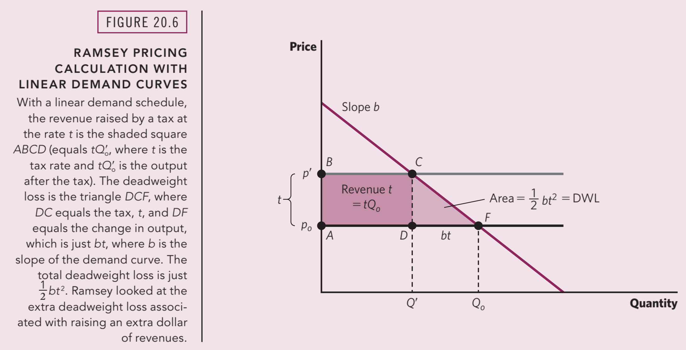
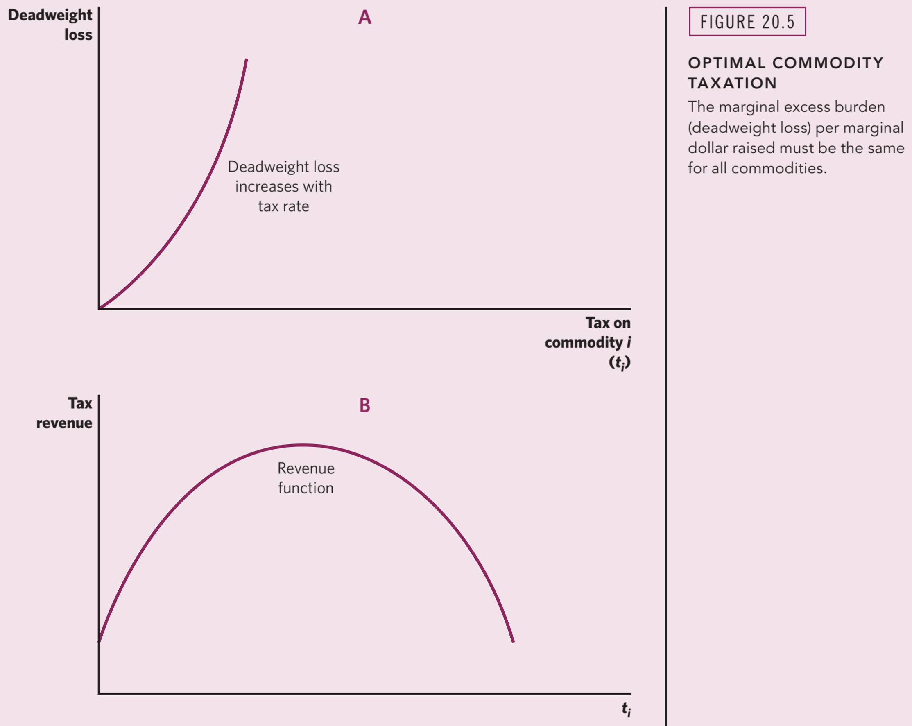
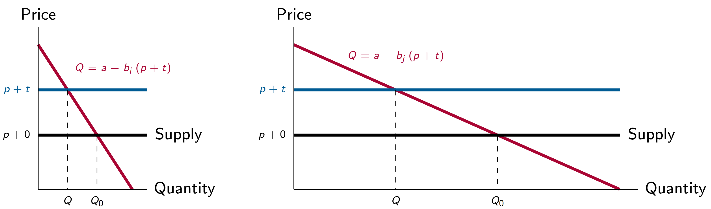
\[\frac{MR_i}{MDWL_i} \stackrel{\downarrow}{=} k' \stackrel{\downarrow}{=} \frac{MR_j}{MDWL_j} = \frac{a - b_j \left( p + 2 t_j \right)}{b_j t_j} = \frac{Q_j}{b_j t_j} - 1\]
Let \(\frac{1}{k} = 1 + k'\) so that \(\frac{Q_j}{b_j t_j} = \frac{1}{k}\), or \(\frac{b_j}{Q_j} t_j = k\).
\[\eta^d_j = - \frac{dQ/Q}{dP/P} = - \frac{dQ}{dP} \frac{P}{Q} = - \left( - b_j \right) \frac{p + t}{Q} = \frac{b_j}{Q} \left( p + t \right)\]
\(\frac{\eta^d_j}{p + t_j} = \frac{b_j}{Q_j} \Rightarrow \eta^d_j \frac{t_j}{p + t_j} = k \Rightarrow \frac{t_j}{p + t_j} = \frac{k}{\eta^d_j}\)
Taxes are inversely proportional to demand elasticities: \[\frac{t_j \color{red} \downarrow}{p + t_j \color{red} \downarrow} = \frac{k}{\eta^d_j \color{red} \uparrow}\]
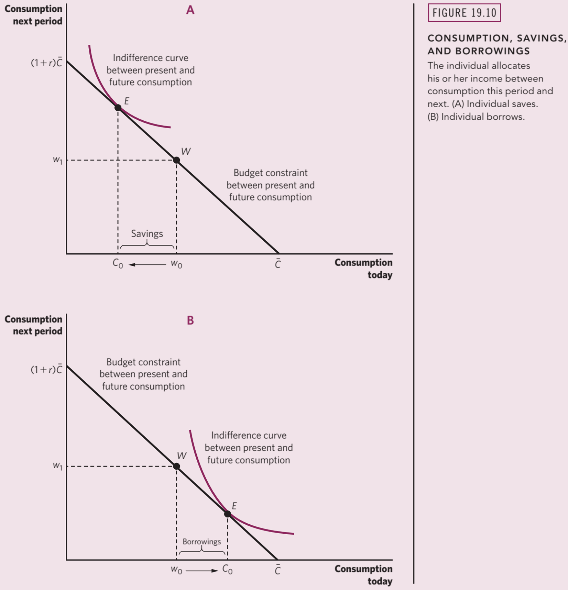
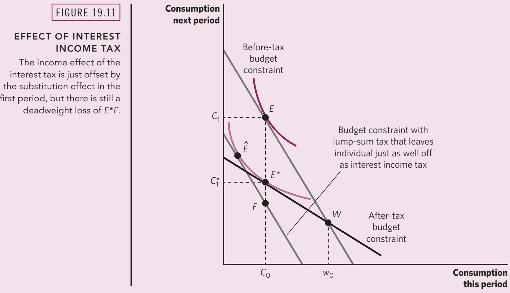
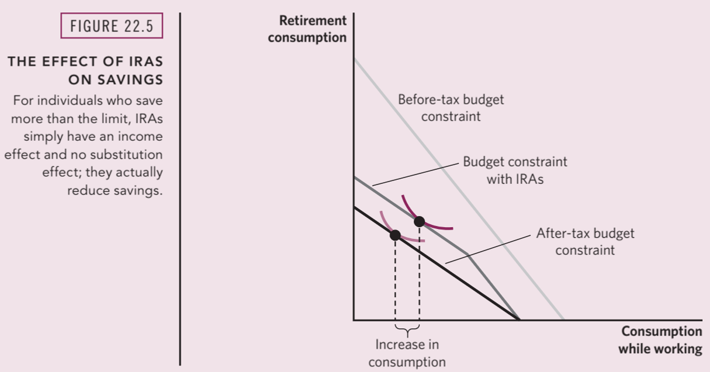
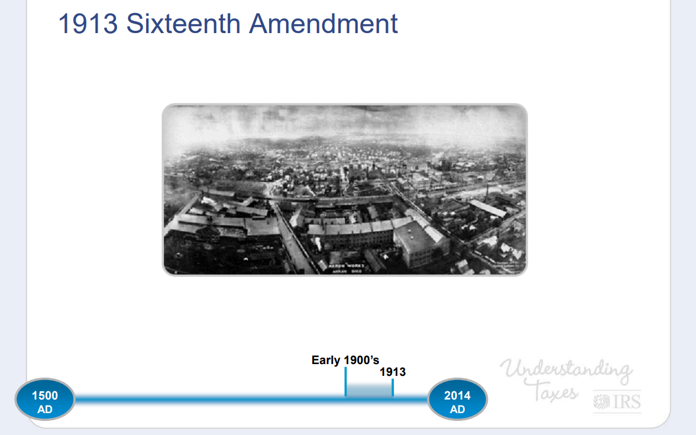
DURING the 1930s, no more than five percent of Americans were income taxpayers. The tax was viewed as a “class tax” directed toward the rich–those President Roosevelt referred to as “economic royalists.” The individual income tax accounted for only between ten and twenty percent of federal revenues during the 1930s. World War II dramatically altered this very limited conception of the income tax. Federal budget expenditures increased more than twelve times from 1940 to 1945. Shortages of goods and increased consumer purchasing power produced a worrisome inflationary situation. For government officials, the income tax came to be seen as both a war financing device and as a means of decreasing excess purchasing power. The result was that the income tax rolls increased from about 7 million taxpayers in 1940 to more than 42 million in 1945. The income tax became in Treasury Secretary Henry Morgenthau, Jr.’s words, “a people’s tax.”
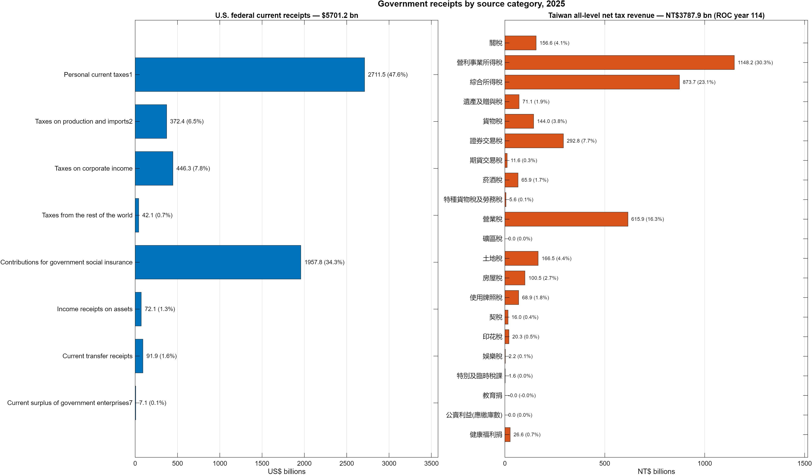
Luther Gulick Memorandum re: Famous FDR Quote
How do you select sources & read them?
An example (at the field level): IR + public economics
Similar situations occur on diverse scales ranging from small neighborhoods to the entire planet. … Some scholarly articles about the “tragedy of the commons” recommend that “the state” control most natural resources to prevent their destruction; others recommend that privatizing those resources will resolve the problem. What one can observe in the world, however, is that neither the state nor the market is uniformly successful in enabling individuals to sustain long-term, productive use of natural resource systems. Further, communities of individuals have relied on institutions resembling neither the state nor the market to govern some resource systems with reasonable degrees of success over long periods of time.
Recommended reading: The Craft of Research
Orient Your Audience From the Start
And establish your side of the relationship with your readers
Writer and reader of equal status confront a shared question or problem
You are a research assistant to a state legislator who needs to decide whether to support a new sales tax on soda and candy as a means of raising state revenues and reducing consumption of sugar. Using the economic analysis tools we have learned in class, write a recommendation memo to your boss.
Undecided or puzzled audiences with skeptical tendencies
What kind of bearings should our engineering team use in our design for a circumferentially mounted radiator fan? Write your proposal to the rest of your team. They are uncertain about the best approach but likely to raise objections to your solution.
Resistant or hostile audiences
The design team for the circumferentially mounted radiator fan has recommended air bearings, but you believe that this decision is a mistake. Write a memo to the team’s project manager laying out your best case against air bearings.
Social Security
https://apps.irs.gov/app/understandingTaxes/student/whys_thm02_les04.jsp